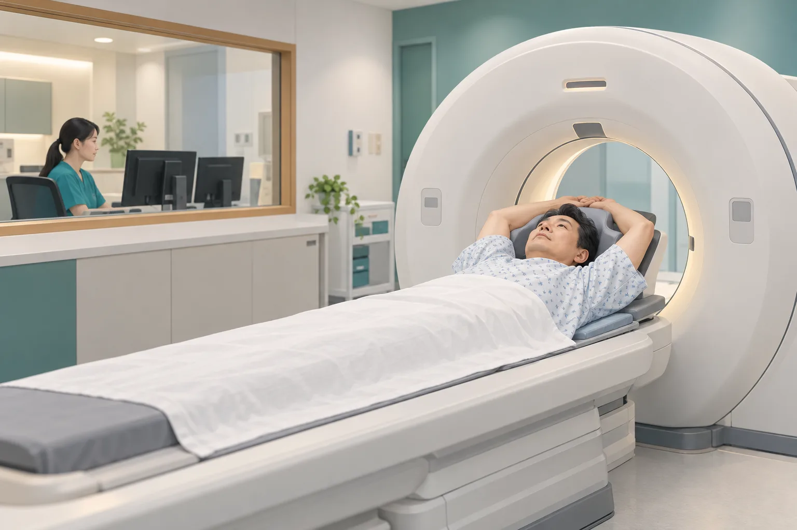

減重手術後體重回升怎麼辦？
術後體重回升，先別責備自己。了解可能原因，以及營養、用藥與回診評估可以如何協助。
閱讀圖文衛教試試較短的關鍵字，或清除條件查看全部主題。
術後體重回升，先別責備自己。了解可能原因，以及營養、用藥與回診評估可以如何協助。
閱讀圖文衛教擔心術後疼痛或噁心？了解醫療團隊如何協助、術前要告知哪些事，以及返家後的注意事項。
閱讀圖文衛教認識呼吸訓練器材的用途、練習時的注意事項，以及如何配合止痛、咳痰與活動幫助恢復。
閱讀圖文衛教
肺癌篩檢｜政府資訊與研究整理誰符合公費資格？檢查怎麼做？用圖文認識 LDCT 的好處與限制，並了解如何到門診安排。
閱讀圖文衛教了解磨玻璃與實心結節的差異、為什麼要比較新舊 CT，以及哪些變化值得回診討論。
閱讀文章整理肺結節、胃食道逆流、縱膈腔腫瘤、食道異物與代謝減重評估前需要準備的資料。
查看清單了解健康狀況、過去減重經驗與營養如何影響手術選擇，以及術後為什麼需要持續追蹤。
閱讀文章整理吞嚥困難、體重下降、分期檢查、食道手術、化療、放療與營養支持等重點。
閱讀文章整理逆流反覆發作、橫膈膜食道裂孔疝氣、胃底摺疊術與門診評估重點。
閱讀文章說明長期逆流、食道黏膜變化、內視鏡檢查與何時需要積極追蹤。
閱讀文章食道異物可能造成穿孔、感染或血管傷害，文章整理錯誤迷思與就醫警訊。
閱讀文章比較電腦斷層導引切片、支氣管鏡切片、胸腔鏡手術與肺部切除範圍。
閱讀文章認識前、中、後縱膈腔常見腫瘤，以及影像、切片與胸腔鏡手術評估。
閱讀文章想進一步了解張醫師參與的研究，或收聽公開訪談？
Appointment
帶著你的檢查結果與疑問，和醫師討論符合你身體狀況的照護。